INCIDENT RECOVERY
HARDWARE SECURITY
BIOS / FIRMWARE
RESOLVED
BIOS Password Recovery &
Firmware Reflash — Intel NUC7i5BNH
A documented hardware-level security recovery challenge: receiving a BIOS-locked
mini PC, diagnosing the failure mode, executing a multi-stage firmware recovery,
and deploying the device as a lab node running Windows Server 2025.
A barebone Intel NUC7i5BNH was purchased from an eBay reseller (e-revive.ltd) for £64.99
as a second node for a home cybersecurity lab running Active Directory on Windows Server 2025.
On first power-on, the device presented a BIOS password prompt — the unit had been returned
to stock with security credentials still set by a prior owner.
Rather than accepting the seller's offer of a full refund, the decision was made to treat
this as a practical hardware security challenge, documenting every step as a portfolio artifact.
[!] WARN
Pre-boot security controls are a real-world scenario.
Enterprises routinely inherit hardware with unknown BIOS credentials during mergers,
device refresh cycles, or asset recovery. Understanding recovery procedures at firmware
level is a meaningful IT security skill.
| Model | Intel NUC NUC7i5BNH (Board: NUC7i5BNB) |
| CPU | Intel Core i5-7260U @ 2.20 GHz (Kaby Lake, 7th Gen) |
| RAM | 16 GB DDR4 SO-DIMM (1.2V) |
| BIOS Vendor | Intel / ASUS (post-2023 NUC acquisition) |
| BIOS Version (post-flash) | BNKBL357.86A.0093.2023.1030.1032 |
| Recovery File | BN0093.bio (FAT32 USB, root directory) |
| Security Mechanism | Physical BIOS Security Jumper (3-pin header, yellow cap) |
| TPM | Intel PTT (fTPM) — cleared during recovery |
| Final OS | Windows Server 2025 |
19 JAN 2026 — 17:43
Device Received — BIOS Password Discovered
On first power-on the device presented a BIOS password prompt. No POST was visible;
the system halted at pre-boot authentication. eBay message sent to seller at 17:51
confirming the issue. Seller responded with an ASUS support guide and offered a full return.
Return declined — challenge accepted.
19 JAN 2026 — ~18:00
Attempt 1: BIOS Security Jumper Removal + CMOS Clear
Device opened. BIOS security jumper (yellow 3-pin cap, labelled BIOS_SE on board) removed.
CMOS battery disconnected. Power button held for 60 seconds. Device left unplugged for
5 minutes. On reassembly and power-on: brief "TROX" display artefact followed by black
screen. No BIOS accessible. Jumper removal had cleared some state but BIOS firmware
itself was now partially corrupted — the security menu appeared briefly but
the system halted.
19 JAN 2026 — ~18:15
Attempt 2: Security Jumper Menu — Option 2 Selected
With jumper removed, the Aptio V UEFI recovery menu appeared on screen:
BIOS User and Supervisor Passwords / Trusted Platform Module / Visual BIOS / Recovery.
Option 2 (TPM clear) was selected. Menu disappeared. Screen went black. No BIOS
output subsequently. Root cause identified: the menu appears only when no valid
.BIO recovery file is detected on USB — selecting options clears individual
components but does not reflash firmware.
19 JAN 2026 — ~18:25
Recovery File Prepared — BN0093.bio on FAT32 USB
ASUS support page confirmed recovery file for all 7th gen BN-series NUCs:
BN0093.bio (BIOS version 0093, released 2023-10-30). USB flash drive formatted
FAT32 (full format). Single .bio file placed at root — no folders, no renaming.
USB inserted into rear port. Jumper removed. Power connected without pressing
power button to trigger auto-recovery mode.
19 JAN 2026 — ~18:35
F7 Flash Confirmed — Firmware Blocks Flashing
This time the F7 update tool detected the USB and .bio file. Confirmation prompt
appeared: "Are you sure you wish to update the BIOS with BN0093.bio?" — confirmed.
Firmware flash log appeared on screen showing sequential block updates, all
completing with [done] status. Device restarted automatically — brief blue
screen (display handshake during LSPCON/graphics firmware reload), then black,
then normal POST.
24 JAN 2026 — 01:11
Full Resolution — Device Operational
BIOS entered successfully (F2). F9 loaded optimised defaults. F10 saved and exited.
System booted normally. Windows Server 2025 installed. Seller notified:
"All works like a charm." Device now active lab node.
The NUC7i5BNH uses an Aptio V UEFI BIOS (AMI-based), which implements
a physical hardware security jumper as a secondary authentication bypass mechanism.
This is distinct from software-based password reset methods and operates at the
firmware level, independent of any installed OS.
The jumper operates in two modes. In its normal position (pins 1–2),
full BIOS security is enforced and the security configuration menu is locked.
With the jumper removed entirely, the board enters a security override
state — the Aptio V security menu becomes accessible, and if a valid .bio recovery
file is present on a FAT32 USB drive, automatic firmware reflash is triggered on power-on.
[i] NOTE
Why the menu appeared instead of silent auto-flash:
The Aptio V BIOS on NUC7 series prioritises USB file detection. If no valid .bio is found,
it falls back to presenting the security menu — which only handles component-level clears
(passwords, TPM), not a full firmware reflash. This is the source of the "menu loop"
experienced during initial recovery attempts.
BIOS FLASH LOG — BN0093.bio — NUC7i5BNB
Flashing image for Intel(R) Management Engine firmware ... [done]
Flashing image for BackUp Recovery Block firmware ... [done]
Flashing image for Boot Block firmware ... [done]
Flashing image for Recovery Block firmware ... [done]
Flashing image for Main Block firmware ... [done]
Flashing image for Graphic firmware ... [done]
Flashing image for FV Data firmware ... [done]
Flashing image for Intel(R) Management Engine firmware ... \
Each block serves a distinct function within the UEFI firmware architecture. The
Boot Block is the first code executed on power-on — corruption here
causes a no-POST black screen. The Main Block contains the primary
BIOS runtime. The Recovery Block is a protected fallback region used
when the main block is unreadable. The Management Engine (ME) firmware
handles Intel AMT, power management, and hardware telemetry — it flashes twice
(initial and verification pass), which is standard behaviour.
The Graphic firmware block controls LSPCON (Level Shifter/Protocol
Converter) behaviour for HDMI/DisplayPort output. Its reflash explains the brief
blue screen and display loss during the post-flash restart — the display pipeline
reinitialises with the updated firmware before handing off to the OS.
[!] TPM
TPM data loss implication: Selecting the TPM clear option during the
initial recovery attempt permanently wiped the Intel PTT (fTPM) keys. Any drives
encrypted with BitLocker using TPM-only protection would have been rendered inaccessible.
In this case no encrypted drives were present. This is a critical consideration in
enterprise asset recovery scenarios — always verify BitLocker recovery key availability
before clearing TPM.
RECOVERY PROCEDURE — VERIFIED STEPS
STEP 1 Prepare recovery USB
Format: FAT32 (full format, not quick)
File: BN0093.bio → root directory only
Source: asus.com/supportonly/NUC7i5BNH/HelpDesk_BIOS/
STEP 2 Hardware preparation
Power off + unplug adapter
Open bottom cover (4x rubber-footed screws)
Remove BIOS security jumper (3-pin header, labelled BIOS_SE)
Insert USB into rear port
STEP 3 Trigger auto-recovery
Connect power adapter — DO NOT press power button
NUC auto-starts; screen stays black during flash
Fan/LED activity confirms process running
Wait 3–10 minutes — DO NOT interrupt
STEP 4 Post-flash
Unplug power after auto-shutdown or LED settles
Remove USB, replace jumper to pins 1-2 (normal position)
Reinstall any removed RAM/NVMe
Power on → F2 → F9 (load defaults) → F10 (save/exit)
NOTE If menu appears instead of silent flash:
USB file not detected — check FAT32 format + file at root
Try different USB drive (USB 2.0, ≤16GB preferred)
Try different rear USB port
[HW]
Hardware Security Controls
Physical BIOS security jumper operation, CMOS battery procedure, and pre-boot authentication bypass at hardware level.
[FW]
Firmware Architecture
Understanding of Aptio V UEFI block structure: Boot Block, Main Block, Recovery Block, ME firmware, Graphics firmware.
[DX]
Systematic Diagnosis
Root cause identification across multiple failure modes — distinguishing between partial clear, firmware corruption, and USB detection failure.
[SC]
Security Implications
TPM data loss risk awareness, BitLocker key management considerations, and enterprise asset recovery implications.
[DC]
Documentation
Timestamped evidence collection throughout the incident — photos, message logs, firmware screenshots — without prior planning.
[LB]
Lab Deployment
Device recovered and deployed as an AD lab node running Windows Server 2025, contributing to an ongoing SOC analyst portfolio build.
// Device & Purchase
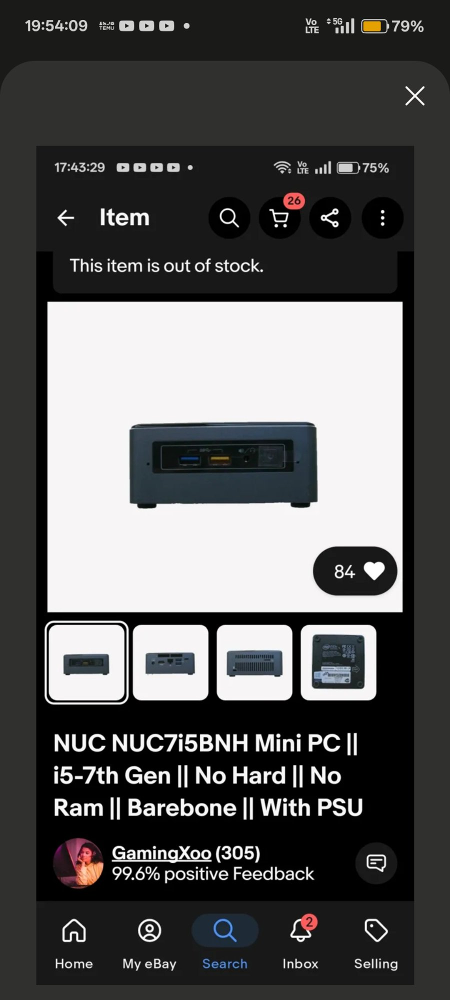
01 — eBay listing · NUC7i5BNH barebone · £64.99 · e-revive.ltd
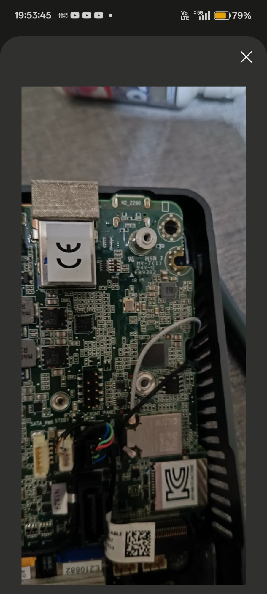
02 — Board fully exposed · NUC7i5BNB top-down
// Hardware Internals
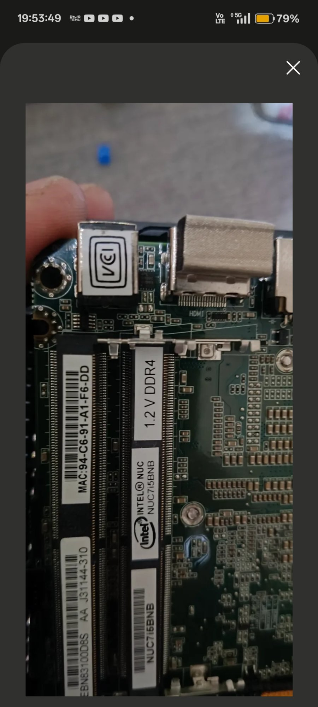
03 — Board label NUC7i5BNB confirmed · 1.2V DDR4 SO-DIMM slots
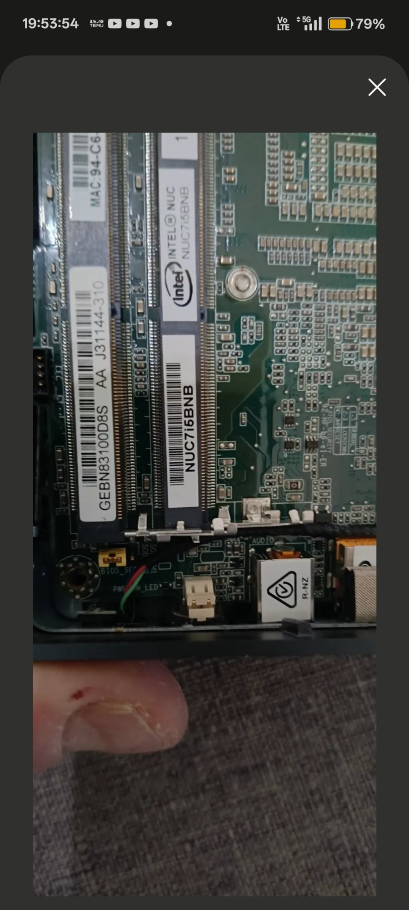
04 — BIOS_SE 3-pin security jumper header · removal enables recovery mode
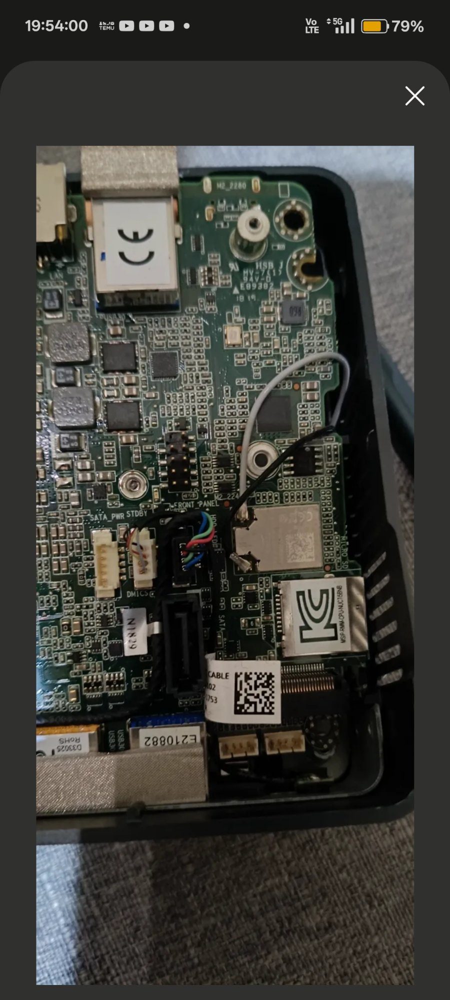
05 — M.2 2280 slot area · board underside · front panel connector
// BIOS & Firmware Recovery
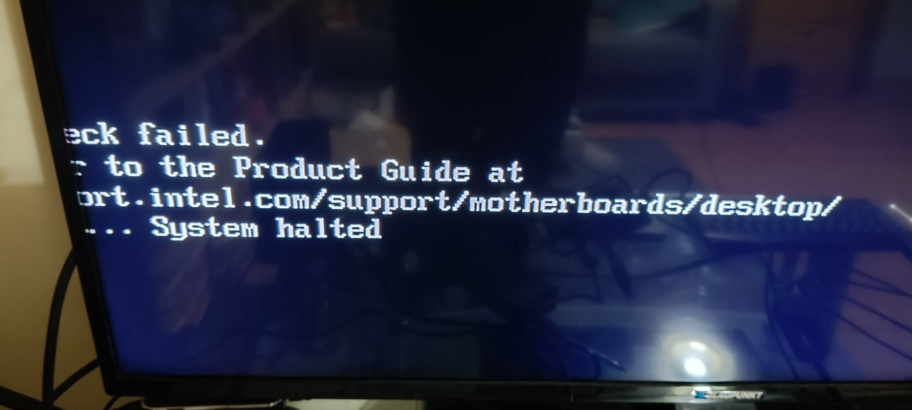
06 — Aptio V security override menu · appeared when no .bio on USB
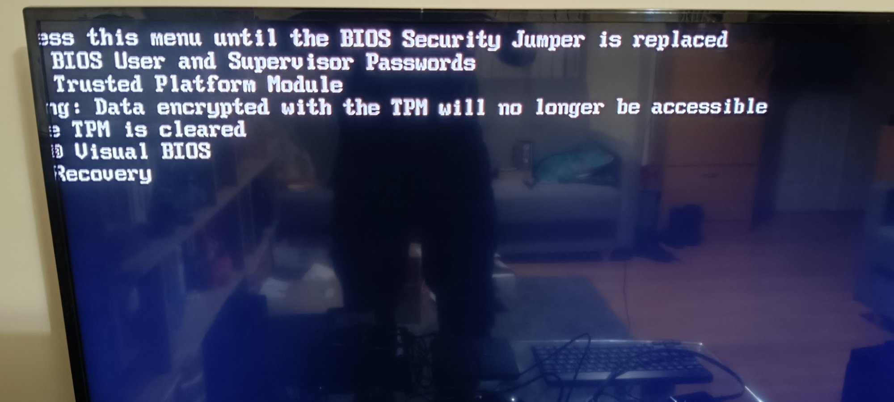
07 — Firmware flash log · all blocks [done] · ME firmware finalising
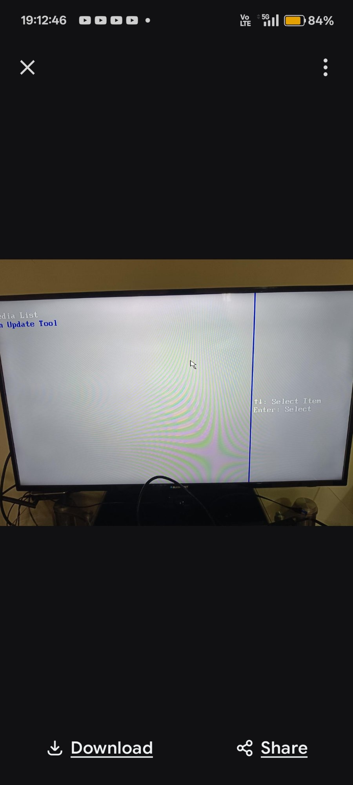
08 — F7 BIOS Update Tool · BN0093.bio detected on USB
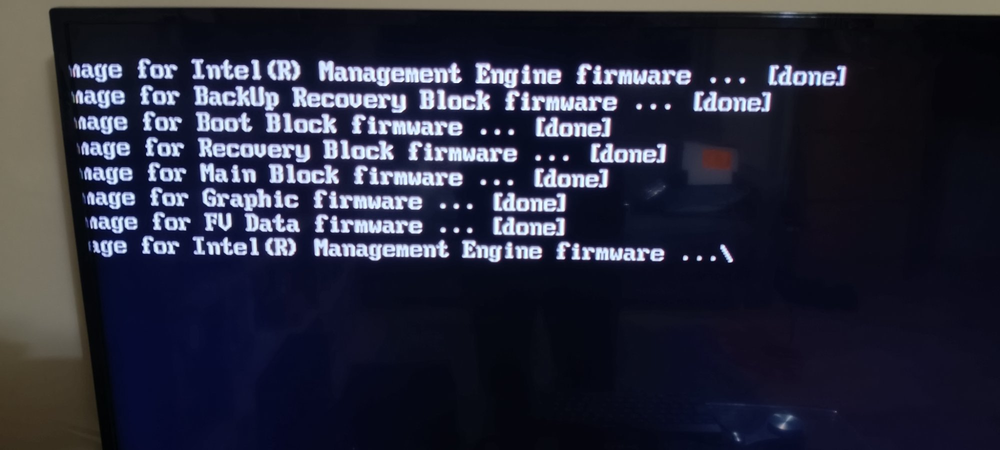
09 — Post-flash BIOS setup · BNKBL357.86A.0093 · 16GB RAM confirmed
// Seller Communication
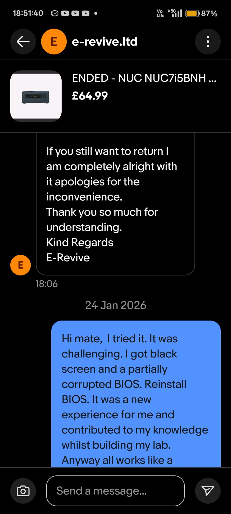
10 — 19 Jan · seller offered full return · challenge accepted
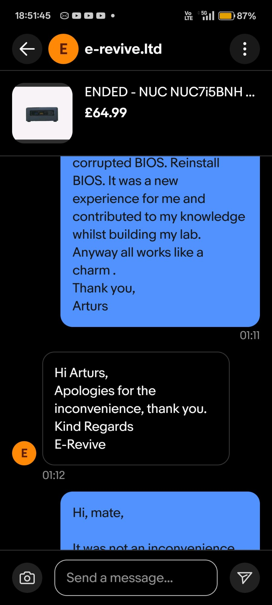
11 — 24 Jan · resolution confirmed · "all works like a charm"
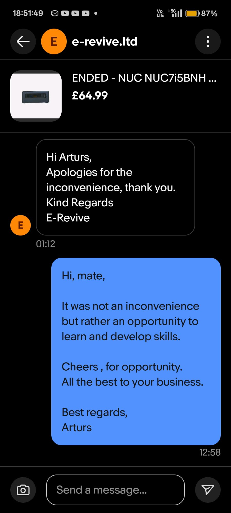
12 — "It was not an inconvenience but rather an opportunity to learn and develop skills."
"It was not an inconvenience but rather an opportunity to learn and develop skills.
Cheers for the opportunity."
— ARTURS, message to seller · 24 JAN 2026 · 12:58
[✓] OK
Final state: NUC7i5BNH fully operational. BIOS version BNKBL357.86A.0093
(latest available for this model). Windows Server 2025 installed. Device active as second
node in ADForest.local home lab environment alongside Splunk 10.2 SIEM, Sysmon, BloodHound CE,
and PingCastle.